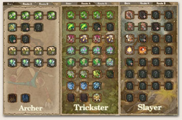

|
ระบบการเรียนรู้ Skill
ระบบ Skill จะเป็นการเรียน Skill ตามระดับ Level ของตัวละคร
คือ เมื่อตัวละครมี Level สูงขึ้น ก็จะมี Skill ปรากฏให้เห็นมากขึ้น
ตารางสัญลักษณ์ของรูป Skill
|
|
Skill และสายการเล่น
ตัวละครทุกตัวในเกมจะมีสายอาชีพหลักอยู่แล้ว แต่สามารถ
ที่จะ Up skill
ไปได้อีก 2 อาชีพ โดยสามารถใช้ skill ของทั้ง 2 อาชีพ
ของตัวละครมา
ผสมกันได้ อยู่ที่ผู้จะจัดสรร skill ให้มีเอกลักษณ์ลงตัว
เหมาะสมกับตัว
ผู้เล่นอย่างไร

จากภาพจะเห็นว่าตัวละครสามารถเรียนรู้ skill ได้ทั้งสามสาย แต่เน้น
ไปที่
สาย Trickster และยังมี Skill ของสาย Slayer เข้ามาเพิ่มอีก
5 skill ด้วย |
| |
|